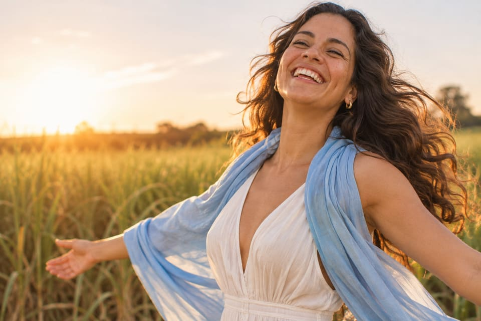
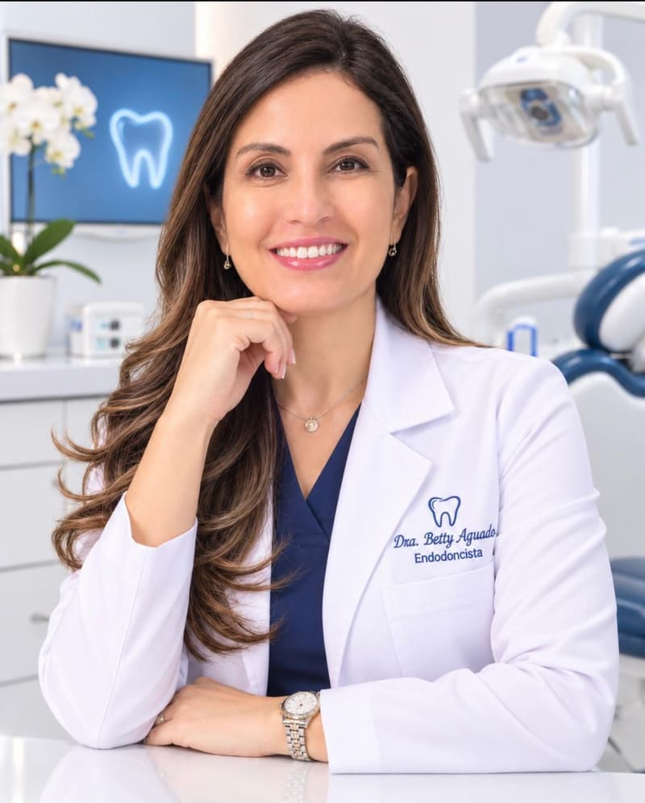
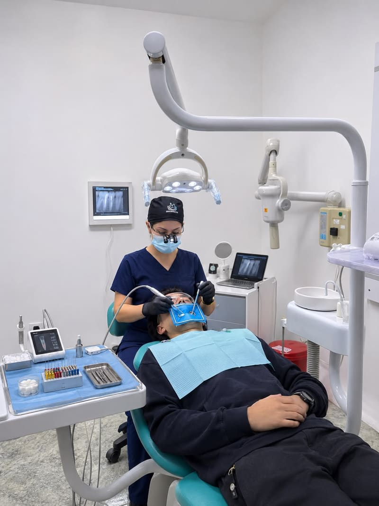
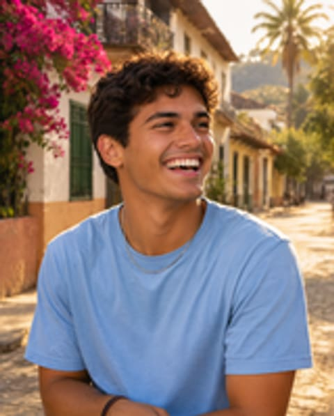
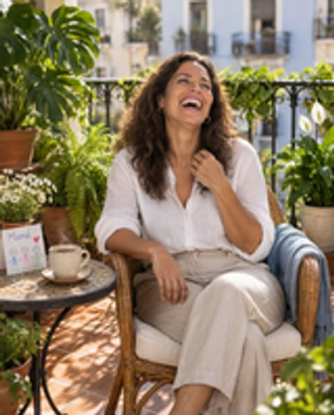
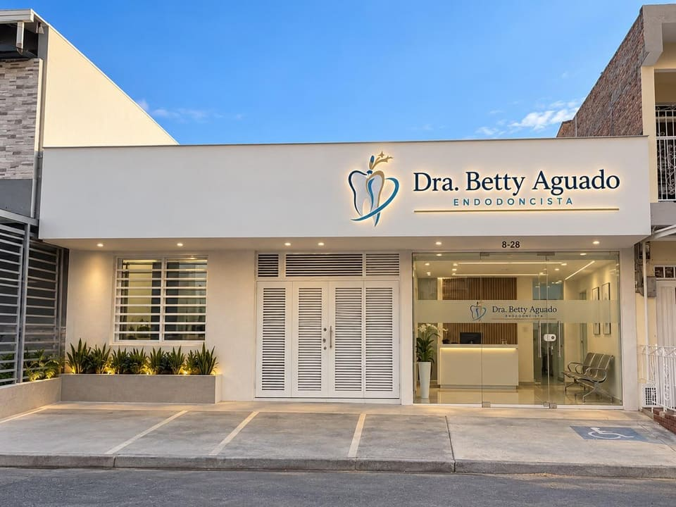
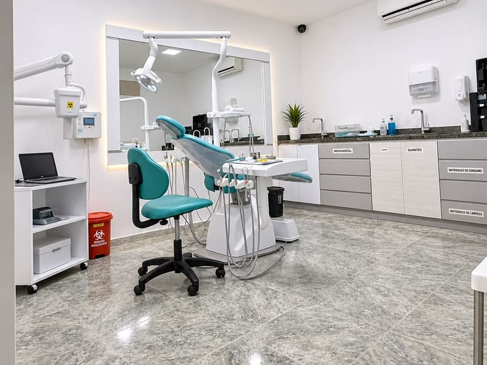
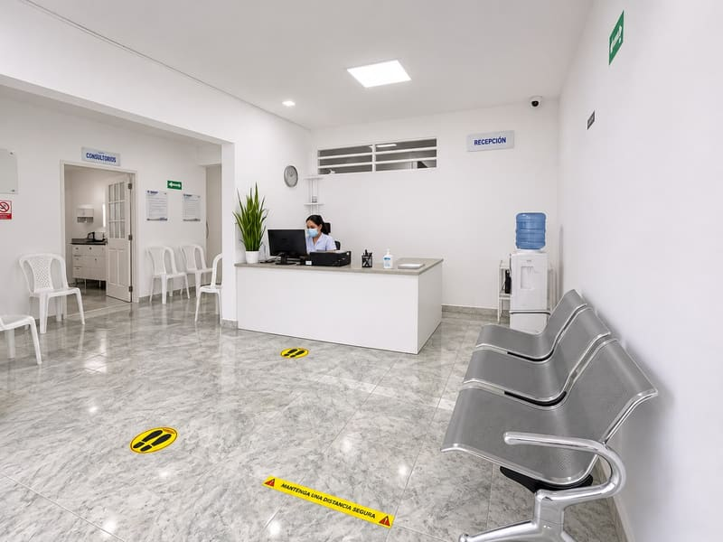
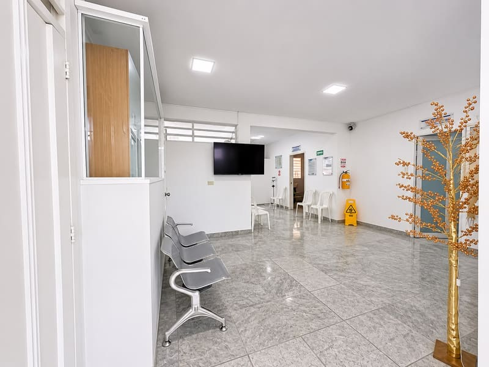

Te escucho
Antes de revisar, conversamos. Quiero saber qué sientes, qué te preocupa y qué esperas.

Soy la Dra. Betty Aguado y, junto a mi equipo, sabemos lo que se siente llegar con miedo. Por eso aquí vamos despacio, de la mano y sin juicios.
Nadie llega al odontólogo solo con una muela. Llegas con tus miedos, con tus planes, con una foto que quieres tomarte sin taparte la boca. Por eso cada tratamiento empieza por conocerte.
Antes de revisar, conversamos. Quiero saber qué sientes, qué te preocupa y qué esperas.
Vamos a tu ritmo. Te explico cada paso antes de hacerlo y paramos cuando lo necesites.
Te explico tus opciones y te recomiendo lo que de verdad te conviene, pensando en tu salud y en tu tranquilidad. La decisión siempre es tuya.
La Dra. Betty y su equipo de profesionales te ofrecen atención odontológica integral para toda la familia: desde una limpieza hasta un tratamiento especializado.

Soy odontóloga egresada de la Universidad Autónoma de Manizales, especialista en Endodoncia de la Universidad Militar Nueva Granada y con formación en Administración en Salud de la Pontificia Universidad Javeriana.
A lo largo de mi trayectoria profesional he desarrollado experiencia en odontología general y especializada, con especial dedicación a la endodoncia.
Hoy continúo ejerciendo mi profesión en Colombia, con el compromiso de ofrecer a cada paciente una atención personalizada, responsable y de calidad, basada en la confianza, el diagnóstico adecuado y el cuidado de su salud oral.
Betty Aguado

Puede ser necesaria si tienes dolor dental, sensibilidad persistente, sufriste un trauma, o presentas inflamación u otra molestia. En ese caso, solicita una valoración odontológica: es importante identificar la causa del problema para determinar el tratamiento adecuado. Consultar a tiempo siempre es mejor.
Porque con este tratamiento conservamos tus dientes naturales, cuidando su salud desde el interior. La endodoncia es un tratamiento odontológico especializado que permite tratar las enfermedades o lesiones que afectan la pulpa dental: el tejido blando que se encuentra en el interior del diente y que contiene nervios y vasos sanguíneos.
Cuando la pulpa se inflama, se infecta o sufre un daño irreversible, puede ser necesario realizar un tratamiento de conductos. Este procedimiento consiste en retirar cuidadosamente el tejido pulpar afectado, limpiar y desinfectar el interior de los conductos radiculares y, posteriormente, sellarlos con materiales especiales.
Su principal objetivo es eliminar la infección, aliviar los síntomas, conservar el diente natural y devolverle su función, evitando la extracción siempre que sea posible.
No hay una sonrisa perfecta: hay la tuya. Estés en la etapa que estés, mereces sentirte libre de reír, hablar y comer sin pensarlo dos veces.


Sin formularios eternos ni salas frías. Solo una conversación entre tú y yo.
Por WhatsApp, cuando quieras. Te respondemos y buscamos juntos el horario que te sirva, desde el día siguiente.
Me cuentas qué te trae, reviso con calma y te explico lo que veo con palabras sencillas.
Te doy tus opciones y su costo con claridad. Sin presión: el tratamiento empieza cuando tú estés listo.
“Lo que más me importa no es terminar rápido: es que salgas de aquí tranquilo, entendiendo todo y con ganas de volver a sonreír.”

| Lunes a viernes | – – |
|---|---|
| Sábados | – |
| Domingos y festivos | Cerrado |



¿No encuentras tu pregunta? Escríbenos por WhatsApp, con gusto te respondemos.
Atendemos cualquier servicio de odontología, para personas de todas las edades: niños (acompañados por un adulto), jóvenes, adultos y adultos mayores. Ofrecemos atención integral en odontología general, endodoncia, periodoncia, cirugía oral, ortodoncia, implantes dentales, rehabilitación oral y odontología estética. La Dra. Betty es especialista en endodoncia y trabaja con un equipo de profesionales para que cada tratamiento lo realice quien mejor conoce el tema. Todo empieza con una valoración donde conversamos sobre tu caso y te explicamos tus opciones.
No. La Dra. Betty es especialista en endodoncia, pero en el consultorio un equipo de profesionales atiende odontología general, periodoncia, cirugía oral, ortodoncia, implantes dentales, rehabilitación oral y odontología estética.
Es más común de lo que crees y no tienes que avergonzarte. Cuéntanos qué te preocupa antes de empezar: vamos a tu ritmo, te explicamos cada paso antes de hacerlo y puedes pedir una pausa cuando lo necesites.
La primera cita es una valoración: conversamos, revisamos tu boca con calma y te explicamos qué encontramos y cuáles son tus opciones y su costo. Tú decides sin presión.
Escríbenos por WhatsApp desde el botón verde de esta página. Necesitamos tu nombre completo, tu número de documento y un teléfono de contacto. Las citas se asignan a partir del día siguiente.
Sí, con mucho gusto. Les dedicamos el tiempo que necesitan, explicamos todo con palabras sencillas y pueden venir con un familiar o acompañante.
Sí, siempre acompañados por un adulto responsable. Para agendar pedimos el nombre del menor y su tarjeta de identidad o registro civil. También expedimos la carta dental que suelen pedir los colegios.
No. El consultorio es particular: no trabajamos con EPS, medicina prepagada ni pólizas.
Tarjeta de crédito, tarjeta de débito y transferencias por Bancolombia o Nequi. La consulta se paga en el consultorio; en tratamientos largos se hace un abono al iniciar.
Sí, puedes cancelar o reprogramar sin costo. Solo te pedimos que nos avises por WhatsApp para darle el espacio a otra persona.
Lunes a viernes de 8:00 a. m. a 12:00 m. y de 2:00 p. m. a 6:00 p. m. Sábados de 8:00 a. m. a 12:00 p. m. Domingos y festivos no atendemos.
En la Calle 13 # 8-29, barrio Bolívar, Zarzal (Valle del Cauca), cerca de la sede de la Universidad del Valle y diagonal a la iglesia pentecostal. La fachada es blanca, con el letrero iluminado “Dra. Betty Aguado – Endodoncista” y puertas de vidrio.
Escríbenos y te buscamos la valoración lo antes posible. Si tienes fiebre, la cara hinchada o un sangrado que no para, acude de inmediato a urgencias.
Pensamos cada detalle para que venir al odontólogo sea fácil, cercano y sin sorpresas.
Información actualizada el .
Tu primera cita es una conversación: te escucho, resolvemos tus dudas y damos juntos el primer paso.
Reserva tu valoración